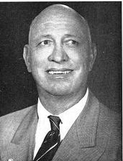

Truman Bethurum
Contactee, 1898 to 1969

He said that on July 28, 1952, while doing roadwork in the Nevada desert, he was taken aboard a flying saucer captained by a woman named Aura Rhanes, from Clarion, a utopian planet said to lie on the far side of the Moon. 1
He told the story in Aboard a Flying Saucer (1954). In 1955 he started the Sanctuary of Thought, a community in Prescott, Arizona, which ended with his death. 1
Open in the interactive Watcher
Related
- Aboard a Flying Saucer Wrote Aboard a Flying Saucer
Sources
- Truman Bethurum Wikipedia